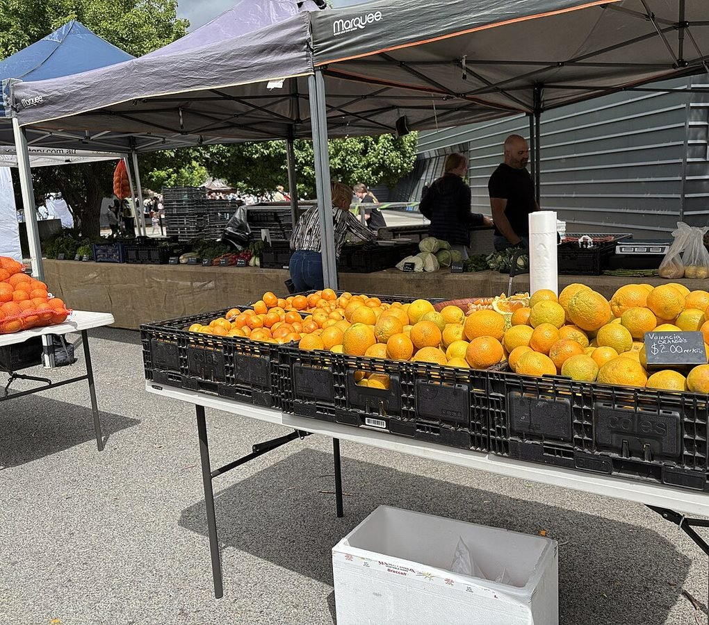
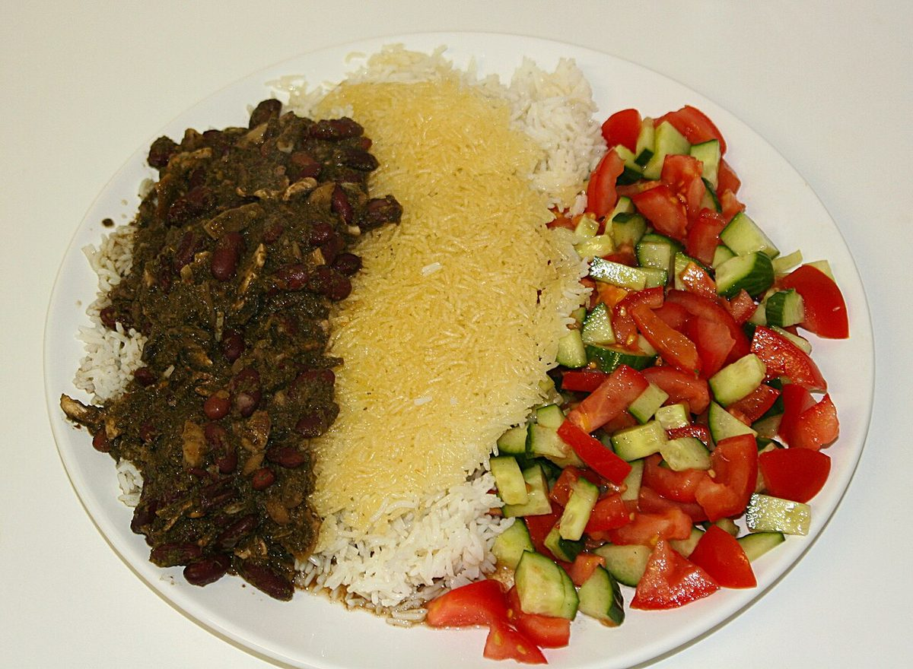

۰۱ · محاسبهگر
محاسبهگر کالری و شاخص تودهٔ بدنی
مشخصات خود را وارد کنید تا کالری روزانه، شاخص تودهٔ بدنی و درشتمغذیهای پیشنهادی را ببینید.
مشخصات شما
نتیجه شما
کالری در روز
با احتساب فعالیت
بر اساس هدف شما
هدف روزانه و پیشبینی تغییر وزن
| بازه | تغییر وزن | وزن پیشبینیشده |
|---|
پیشبینی بر پایه این فرض ساده است: هر کیلوگرم چربی بدن حدود ۷٬۷۰۰ کالری انرژی دارد. در واقعیت، تغییر وزن خطی نیست و آب بدن و عضله هم روی عدد ترازو اثر میگذارند.
درشتمغذیهای روزانه
| ماده مغذی | گرم در روز | کالری | سهم |
|---|---|---|---|
| پروتئین | … | … | … |
| چربی | … | … | … |
| کربوهیدرات | … | … | … |
نمونه برنامه یک روز (مقادیر به گرم)
قدمهای بعدی شما
نتیجه شما
هنوز محاسبهای انجام نشده است. مشخصات را وارد کنید و دکمه محاسبه را بزنید تا کالری روزانه، شاخص تودهٔ بدنی و برنامه یک روزهتان را ببینید.
۰۲ · سبزینه را بشناسید
سبزینه را بشناسید
همه ابزارهای لازم برای رسیدن به وزن دلخواه، در یک برنامه

شمارش ریز و درشتمغذیها
کالری، پروتئین، چربی و کربوهیدرات هر وعده را ثبت کنید و سهم روزانهتان را ببینید.
برنامه غذایی شخصی
بر اساس هدف، وزن و میزان فعالیت شما یک برنامه روزانه ساخته میشود.
تعیین هدف وزنی
هدف وزنی و زمان رسیدن به آن را مشخص کنید؛ برنامه هر هفته با پیشرفت شما هماهنگ میشود.
دستورهای غذایی
دستورهای خانگی با کالری مشخص، دستهبندیشده بر اساس نوع غذا.
یادآور آب و وعده
یادآور نوشیدن آب و ثبت وعدهها، تا هیچ وعدهای از قلم نیفتد.
ورزش در خانه
تمرینهای خانگی دستهبندیشده بر اساس قسمتهای بدن، بدون نیاز به باشگاه.
۰۳ · برنامههای غذایی
برنامههای غذایی
یک برنامه را انتخاب کنید؛ محاسبهگر با هدف همان برنامه تنظیم میشود
روزهداری متناوب ۱۶:۸
۱۶ ساعت روزه و ۸ ساعت پنجره غذا خوردن در روز؛ مناسب کسانی که میخواهند بدون حذف غذاهای محبوب، کالری را کم کنند.
رژیم ۵:۲
پنج روز خوردن معمولی و دو روز کمکالری در هفته؛ شروع سبک برای آشنایی با روزهداری متناوب.
برنامه پروتئینی
پروتئین بالا و کربوهیدرات کنترلشده؛ برای حفظ عضله در کنار کاهش وزن یا عضلهسازی.
رژیم مدیترانهای
سبزیجات، حبوبات، ماهی و روغن زیتون؛ یک سبک زندگی سالم و پایدار، نه یک رژیم موقت.
برنامه گیاهی
بدون گوشت، با پروتئین گیاهی از حبوبات و سویا؛ برای کسانی که به رژیم گیاهی علاقه دارند.
کمکربوهیدرات
کاهش نان، برنج و شیرینی و جایگزینی با سبزیجات و پروتئین؛ برای کنترل اشتها و قند خون.
۰۴ · دستورهای غذایی
دستورهای غذایی
دستهای را انتخاب کنید تا دستورهای همان گروه را ببینید

خورش سبزی با مرغ
سبزی خورشتی، لوبیا قرمز و سینه مرغ؛ نسخه سبک خورش سنتی. این همان غذایی است که مخاطب واقعاً میخورد، نه یک «کاسه سالم» استوک.
۳۸۰ کالری • ۵۰ دقیقهسالاد فصل با مرغ گریل
کاهو، گوجه، خیار و سینه مرغ گریل با سس ماست و لیمو
۳۲۰ کالری • ۲۰ دقیقهسالاد شیرازی با پنیر
خیار، گوجه و پیاز با پنیر کمچرب و نعناع تازه
۱۸۰ کالری • ۱۰ دقیقهخورش قیمه کمچرب
لپه و گوشت کمچرب با لیموعمانی؛ با برنج کم یا بدون برنج
۴۵۰ کالری • ۶۰ دقیقهخورش سبزی با مرغ
سبزی خورشتی، لوبیا قرمز و سینه مرغ؛ نسخه سبک خورش سنتی
۳۸۰ کالری • ۵۰ دقیقهلوبیاپلو با گوشت کمچرب
لوبیا سبز، برنج و گوشت چرخکرده کمچرب با زعفران
۵۲۰ کالری • ۴۵ دقیقهعدسپلو با کشمش و خرما
عدس، برنج و پیاز داغ کمروغن؛ یک وعده گیاهی کامل
۴۸۰ کالری • ۴۰ دقیقهاسموتی موز و جو دوسر
موز، شیر کمچرب، جو دوسر و یک قاشق کره بادامزمینی
۲۸۰ کالری • ۵ دقیقهدوغ خانگی با نعناع
ماست کمچرب، آب گازدار و نعناع تازه؛ همراه ناهار
۹۰ کالری • ۵ دقیقهجوجهکباب با سبزیجات گریل
سینه مرغ مزهدار با زعفران و لیمو، گریلشده با فلفل و قارچ
۴۱۰ کالری • ۳۵ دقیقهکباب تابهای مرغ و قارچ
مرغ چرخکرده با قارچ و پیاز، پخته در تابه بدون روغن اضافه
۳۶۰ کالری • ۲۵ دقیقهکوکوی سبزی رژیمی
سبزی کوکو، تخممرغ و گردوی خردشده؛ پخته در فر
۲۴۰ کالری • ۳۰ دقیقهفرنی با شیر کمچرب
شیر کمچرب، آرد برنج و کمی عسل؛ دسر سبک شبانه
۲۱۰ کالری • ۱۵ دقیقهدر این دسته هنوز دستوری ثبت نشده است.
۰۵ · تجربه کاربران
تجربه کاربران سبزینه
هر کارت، یک معیار اعتماد: نتیجهای که کاربر واقعاً گرفته است
«با شمارش کالری فهمیدم مشکل از وعدههای کوچک بین وعدههای اصلی بود؛ در سه ماه ۸ کیلو کم کردم و هنوز همان برنامه را ادامه میدهم.»
سارا
۸ کیلو کاهش وزن در ۳ ماه
«برنامه ۱۶:۸ برایم خیلی راحت جا افتاد؛ محاسبهگر از همان روز اول کالری هدفم را مشخص کرد و دیگر حدس نمیزنم.»
امیر
۵ کیلو کاهش وزن در ۲ ماه
«دستورهای گیاهی برنامه آنقدر متنوع است که اصلاً حس رژیم گرفتن ندارم؛ وزن ثابتی دارم و انرژیام بیشتر شده است.»
نگار
حفظ وزن با برنامه گیاهی ۲۱ روزه
«برای عضلهسازی دنبال پروتئین کافی بودم؛ برنامه پروتئینی و یادآور آب، دو چیزی بود که واقعاً به کارم آمد.»
مهدی
۲ کیلو افزایش عضله در ۶ هفته
۰۶ · پرسشهای پرتکرار
پرسشهای پرتکرار
پاسخ کوتاه به سؤالهایی که بیشتر پرسیده میشوند